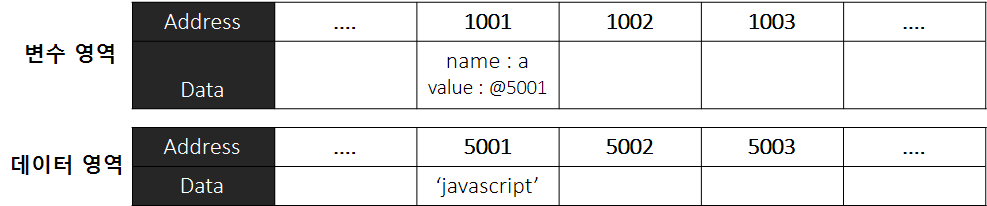
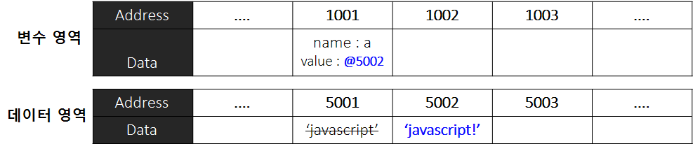
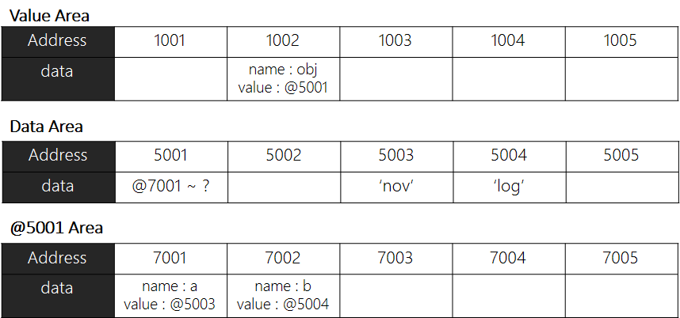
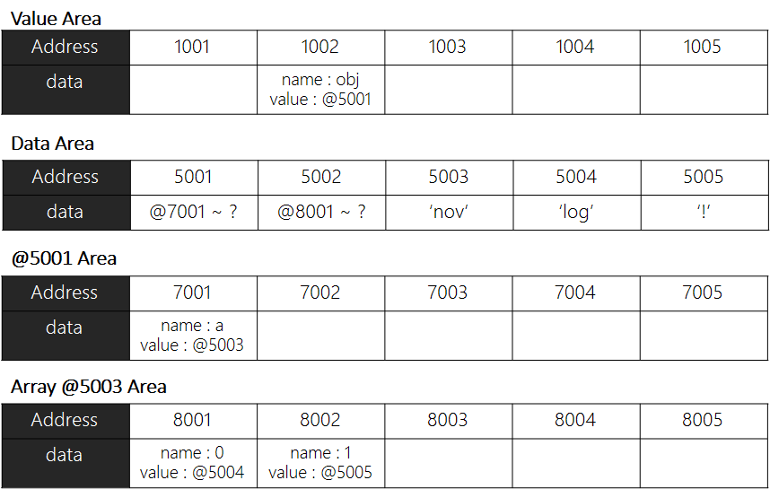

#1 기본형 데이터의 메모리 영역 변화
#2 참조형 데이터의 메모리 영역 변화
#3 중첩 객체의 메모리 영역 변화
* 다음 포스팅은 개인적인 공부 용도로 코어 자바스크립트 [Core Javascript] 도서를 읽고 정리 및 요약한 글 이며, 잘못된 내용을 포함하고 있을 수 있습니다.
#1 기본형 데이터의 메모리 영역 변화
var a;프로그래머가 위와 같이 변수를 선언할 시 자바스크립트 엔진은 다음과 같은 동작을 수행한다.
변수를 선언하면 비어있는 메모리 공간을 찾아 확보하며, 이 공간의 이름(식별자)를 a라고 지정한다.

var a = 'javascript';다음으로 선언한 변수 a에 'javascript'라는 문자열을 할당하면 예상과 달리 변수영역에 값을 직접 대입하지 않는다.
데이터를 저장하기 위한 별도의 메모리 공간(데이터 영역)을 하나 더 확보한 뒤 확보한 데이터의 주소를 변수 영역에 저장해 연결하는 방식으로 이루어 진다.

이처럼 변수 영역에 값을 직접 대입하지 않는 이유는 메모리를 더욱 효율적으로 관리하기 위함이다.
자바스크립트에서 숫자형 데이터는 항상 8비트의 공간을 확보하지만 문자열 데이터는 정해진 규격이 없다. 따라서 만약 문자열 데이터의 변환이 요구되는 상황이 발생한다면 매 번 변환된 데이터에 맞게 크기를 변경하는 작업이 필요하게 된다.
자바스크립트 엔진은 이러한 불필요한 연산을 최소화 하기 위해서 데이터를 저장하기 위한 별도의 영역을 확보하는 방식을 채택하였다.
예를들어 변수 a에 'javascript!'라는 문자열을 재할당하면, 'javascript' 뒤에 '!'를 추가하는 것이 아닌 데이터영역 5002번지에 'javascript!' 문자열을 새로 별도의 공간에 저장한 뒤 새로운 공간의 주소를 변수 공간에 연결한다.
이 때 데이터 영역 5001번지의 'javscript' 데이터는 자신을 참조하는 주소가 존재하지 않기에 가비지 컬렉터의 수거 대상이 된다. 특정 데이터에 대해 자신의 주소를 참조하는 변수의 개수를 참조 카운트 라고 하는데, @1001에 @5001이 저장되어 있던 시점 까지는 참조 카운트가 1 이었지만 @5002가 저장되는 순간 0이 된다. 참조 카운트가 0인 메모리 주소는 가비지 컬렉터의 수거 대상이 된다.

#2 참조형 데이터의 메모리 영역 변화
지금까지 기본형 데이터의 선언과 할당 시 메모리 영역의 변화에 대해서 알아 보았다. 이번에는 참조형 데이터를 변수에 할당할 때 메모리에 어떤 식으로 저장 되는지에 대해 알아보자.
var obj= {
a: 'nov',
b: 'log'
};데이터 영역(5001 ~ 5005 ..)에 데이터를 저장 하고자 하니 여러개의 변수(프로퍼티)로 이루어진 객체이다. 따라서 이 변수(프로퍼티)들을 저장하기 위한 별도의 변수 영역(@5001Area)을 할애하고 그 영역(@5001Area)에 프로퍼티(a, b)들의 정보를 저장한다.

기본형 데이터와 달리 참조형 데이터는 객체의 변수(프로퍼티)만의 영역이 따로 존재 한다.
#3 중첩 객체(nested object)의 메모리 영역 변화
참조형 데이터의 프로퍼티에 다시 참조형 데이터를 할당하는 중첩 객체(nested object)의 메모리 영역 변화에 대해 알아 보도록 하자.
var obj = {
a: 'nov',
arr: ['log','!']
};obj 프로퍼티의 고유 영역(@5001 Area)이 할당 되었듯이, obj 내부의 객체 프로퍼티의 고유 영역(@Array @5003 Area) 또한 할당된다.
